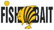

Приглашаем всех желающих принять участие в самом интересной турнире этого лета по ловле на фидер - FEEDER MIX FIGHT CHALLENGE #2
60 участников в индивидуальном зачете поборятся за призовой фонд предоставленный интернет магазином лучшей прикормки www.saimofishfishing.ru, магазина рыболовных товаров "Мои Снасти", производителя товаров для рыбалки "Maver" и конечно же генеральный партнер турнира торговая марка DUNAEV.
Турнир будет проходить 26 сентября 2015 года на коммерческом водоеме "Генезис"
Кубок проводится при информационной поддержке блога о фидере www.feederizm.ru, а так же видеоканала Егора Доленко "Lucky Angler"
Присоединяйтесь к самой активной части рыболовного сообщества Москвы и Подмосковья, участвуйте в новом увлекательном турнире! Выиграйте свой КУБОК или станьте обладателем ценных призов от наших спонсоров!
FEEDER MIX FIGHT CHALLENGE - Final 2015 Battle для каждого! Мы предлагаем равные стартовые условия для каждого рыболова, хороший водоем, отличное настроение, ценные призы и море позитива!
- Дата проведения кубка: 26.09.15
- Водоем: КРХ "Генезис"
- СТОИМОСТЬ УЧАСТИЯ: 1 000 рублей
- Прибытие на водоем: 26.09.2015 до 06:00
- Жеребьёвка: с 06:00-06:30
- Вход в сектор: 07:00
- Продолжительность тура: с 08:30 до 14:30
- Награждение: 15:30
- 1 место обладатель кубка #FMFC
- 2 место призер
- 3 место призер
- 4-5 места «дышим в спину» победителям
- 13 место САМЫМ «ВЕЗУЧИМ»
- Самая Крупная Рыба турнира Особая награда
-

- 
Соревнование проводится в 1 тур, продолжительностью 6 часов. Все участники располагаются в одной зоне. Длина сектора, независимо от количества участников, ограничена пятью метрами и более;
Компания DUNAEV предоставляет участникам на выбор три любых пакета прикормки, кроме серий Спорт и компонент. Участники при регистрации должны указать выбранный набор прикормок. Для создания равных условий участники обязаны использовать только выбранные ими смеси от производителя DUNAEV. Использование других прикормок запрещено.
Количество прикормки ограничено. Участникам разрешатся использовать только сухую прикормочную смесь предоставленную организаторами (три пакета на выбор), до 12 литров другой составляющей (пеллетс, грунт, зерновые компоненты) и до 2-х килограмм «живой составляющей» в том числе насадки (мотыль, червь, опарыш). Количество искусственных насадок и насадок растительного происхождения ограничивается 1.5 кг общего веса. Проверка прикормки и насадок будет произведена судейской бригадой в течение часа после сигнала входа в зону.
Разрешено прикармливать только с помощью рабочего удилища, оснащённого кормушкой. Использование других приспособлений запрещено.
Ловля осуществляется одним рабочим удилищем с одной кормушкой или грузилом, с одним одинарным крючком. Количество запасных снастей не ограничивается.
Поклёвка рыбы определяется только с помощью квивертипа.
Запрещена ловля на живца.
В зачёт идёт вся пойманная рыба.
Разрешено использовать любые виды оснасток, в том числе «метод» и «волосяные».
Поиск точки ловли осуществляется только с помощью рабочего удилища и маркерного груза. Использование маркерных удилищ и маркерных поплавков запрещено.
Ширина сектора – не менее 7 метров.
При количестве участников от 25 и более, берег будет разделен на зоны. В зонах находится равное количество участников (допускается разница, но не более 1 участника).
Минимальная разрешенная длина садка, сетка которого изготовлена из естественной или искусственной нити – 3 метра. Применение металлического садка запрещено.
Использование подсачека при вываживании обязательно, вываживание рыбы без использования подсачека строго запрещено, независимо от размера рыбы.
В связи с большим количеством крупной рыбы в водоеме просим подготовиться и иметь при себе подсачек с большой головой.
Так как вся рыба подлежит отпусканию, то бережное отношение с рыбой обязательно.
После сигнала "финиш" все снасти должны быть извлечены из воды.
Процедура взвешивания:
ВНИМАНИЕ! При поимке крупной рыбы, весом более 3 кг, участник обязан немедленно позвать судью и осуществить досрочное взвешивание, после чего рыба должна быть отпущена.
В садке разрешено хранение рыбы весом менее 3 кг, при условии, что садок должен быть хорошо заглублен и расправлен. Длина садка не менее 3 метров.
Брать рыбу под жабры и за глаза, а также класть на землю категорически запрещено!
За небрежное и издевательское обращение с рыбой дисквалификация.
До прихода судей для взвешивания, участники не должны вынимать садки из воды. Рыба вынимается из садка и перекладывается в сумку для взвешивания одним из членов команды. После взвешивания всей зоны рыба отпускается в водоем под контролем судей.
Во время взвешивания участник должен быть рядом, чтобы контролировать процесс и подписать протокол взвешивания. Никакие протесты по поводу веса пойманной рыбы после завершения взвешивания, возвращения ее в водоем и подписания протокола не принимаются.
Подведение результатов и награждение:
Участники, занявшие призовые места, награждаются Кубками и ценными призами от спонсоров.
Возможно учреждение дополнительных номинаций от спонсоров.
Тренировка:
Тренировка согласована с администрацией водоема.
Стоимость тренировки - 750 рублей. Карп отпускается, карася можно забрать.
Прикормку для тренировки вы можете приобрести тут:
Магазин "Мои снасти"